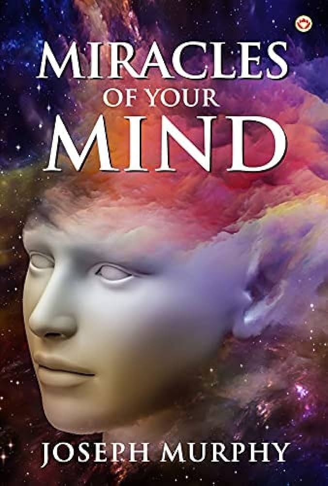
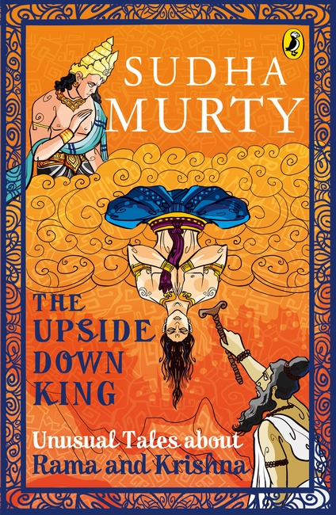
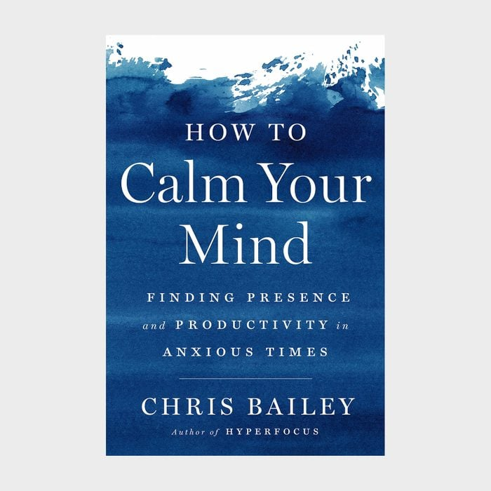

"Miracles of Your Mind" is a self-help book by Ernest Holmes that focuses on the idea that the power of the mind can influence one's life and bring about positive change. The book explores how individuals can unlock the potential of their minds to create better outcomes in their lives.
"In The Upside Down King", Sudha Murthy presents the story of a young boy born in a royal family who, instead of growing up to be a typical prince, decides to live his life in an unconventional way—turning the traditional royal life upside down.
"In How to Calm Your Mind", Chris Bailey shares tips, techniques, and exercises to help individuals clear their minds, focus better, and cultivate a sense of mental stillness. The central idea is that calming your mind doesn’t require drastic changes.
  